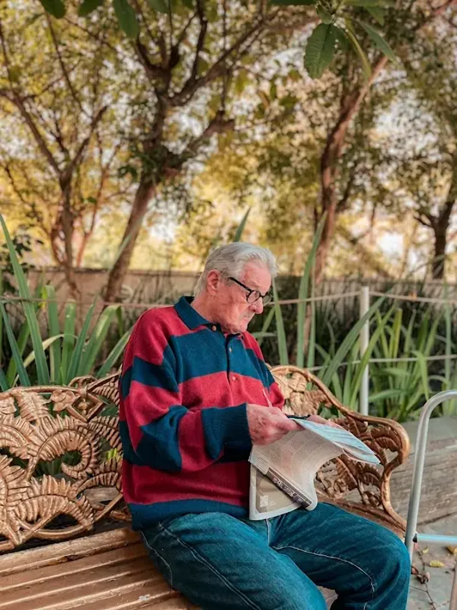
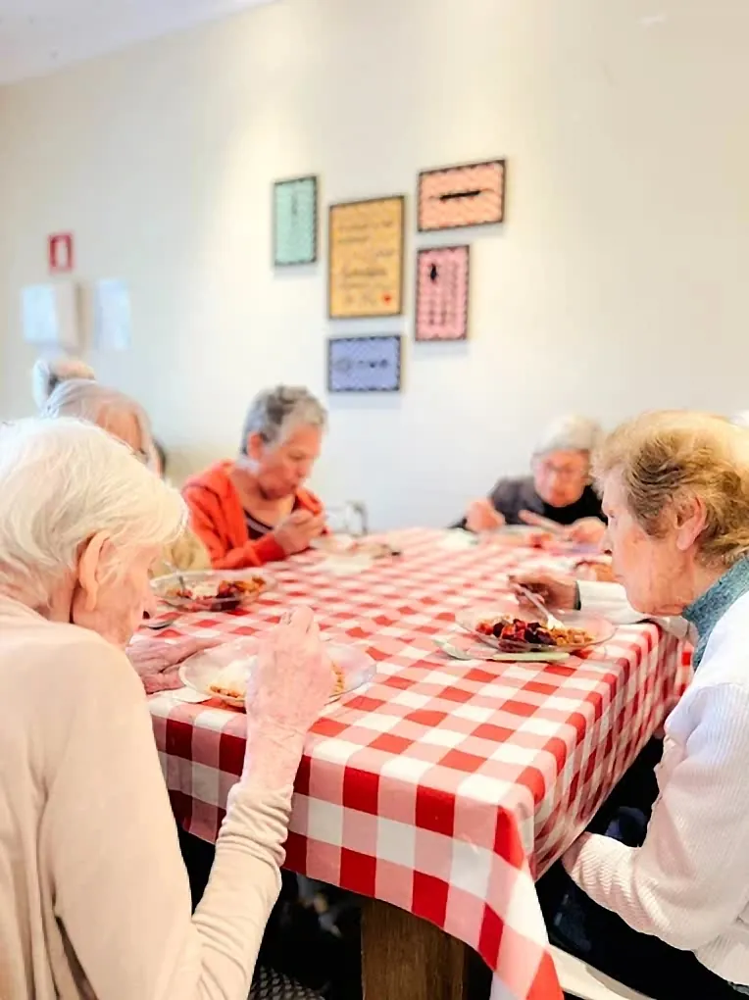

Cuidar é enxergar a pessoa antes da idade
Cada hóspede chega com uma história, hábitos e um jeito próprio. É por aí que o cuidado começa.

Movimento faz parte da rotina
Atividade física com fisioterapeuta pelo menos duas vezes por semana.

Seis refeições por dia
Preparadas com carinho e atenção ao sabor e à saúde de cada um.

Venha ver de perto
Rua Traipu, 954, no Pacaembu. Agende uma visita pelo WhatsApp.